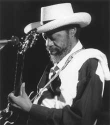
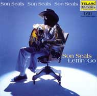

Дрю УИЛЕР, CDNOW

У Сона Силса (Son Seals) выдалось несколько очень тяжелых лет подряд. В 1997 году этот хриплоголосый могучий оракул чикагского блюза получил пулю в лицо от… собственной жены (теперь уже бывшей) и перенес тяжелейшую операцию по восстановлению челюсти. А в прошлом году он потерял левую ногу в результате тяжелой инфекции на фоне диабета.Несмотря ни на что, в двухтысячном году Сон Силс вернулся, и вновь заряженный живой, ревущей энергией блюза. Его новый диск "Lettin' Go" - дебют на лейбле "Telarc" - это первый студийный альбом за последние пять лет. В группе среди прочих - ритм-гитарист Джимми Вивино (Jimmy Vivino), рок-ветеран Эл Купер на хаммонде B-3 и специально приглашенный гость - гитарист Трей Анастазио из культовой джем-группы "Phish".
Очень мощный энергетически, насыщенный духовыми, альбом достаточно разнопланов. В нем есть и задумчивая вещь Алонсо Джонсона "Jelly, Jelly", обрамленная резкими гитарными соло Силса, и "богато" исполненный крик души Вивино "Bad Luck Child", но преобладают все же песни самого Силса. Острая фанковая тема "I Got Some Of My Money" (о том что иметь-много-денег-лучше-чем-ничего), выдержанная в стиле Чака Берри вещь "Osceola Rock", основанная на действительных событиях из жизни музыканта, когда он приобретал первый опыт в отцовском блюзовом клубе в Арканзасе, ну и, конечно, римейк старой его песни "Funky Bitch" с "тарахтящей" гитарой Трея Анастазио.
Совершенно неожиданно для всех, но не для Силса, он сделал несколько песен на тексты Эндрю Вэкса (Andrew Vachss), известнейшего автора "черных" криминальных романов. Одна из этих вещей, пронзительный "Doc's Blues", где голосу певца постоянно "отвечает" духовая секция, посвящена врачам. Это неудивительно - и в буклете Силс с благодарностью поименно упоминает шесть докторов, которые лечили его и сделали все возможное для того, чтобы его несломленный дух был в состоянии вновь вывести его на сцену.
Дрю Уилер: Есть ли какой-то особый смысл у названия твоего нового альбома, "Lettin' Go"?

Сон Силс: Да, я думаю, что название имеет что-то общее с той музыкальной свободой, которая была у нас всех в процессе записи альбома - мы делали буквально то, что нам нравится и никто не говорил нам "нет" ни по какому поводу. Мне предоставили возможность полного контроля процесса. Знаешь как например, если ты идешь в булочную и говоришь: "Испеките мне пирог", то что ты делаешь потом? Путаешься у них под ногами и даешь разные советы, что им стоит и что не стоит делать? Конечно нет, ты оставляешь их в покое и даешь всему процессу крутиться как бы самому по себе ("Letting Go" имеет по-английски примерно такой смысл - "дать событиям развиваться естественным ходом…" - Прим. перев.), если ты им доверяешь, конечно, а если нет, то ты просто не идешь к ним. Так же и в музыкальном плане - я считаю, что артисту нужно предоставлять свободу делать то, что он чувствует.ДУ: Каким образом Трей Анастазио из "Phish" оказался в твоем проекте?
СС: Это целая история. Я со своей группой как-то выступал в штате Иллинойс и на одном из концертов я увидел на улице перед сценой (а это было выступление на открытом воздухе) целую толпу подростков. Я понимал, что они все были слишком молоды, чтобы раньше видеть меня где-нибудь в клубе, но они так свистели и радовались, особенно на вещи "Funky Bitch", что Анна, мой менеджер, сказала: "Какого черта, не понимаю, где они могли слышать это раньше?" Она спустилась вниз, начала расспрашивать некоторых молодых людей, и они сказали, что слышали эту песню в исполнении "Phish". Тогда-то все и закрутилось. Она (Анна) связалась с группой просто для того, чтобы поблагодарить за интерес к моей музыке. Они сразу ответили и все были очень рады тому, что я заметил их. Оказывается, они слушают мои песни очень давно - еще до того времени, когда они собрались вместе в первый раз. А некоторые из них слушали меня, когда вообще ходили в школу. Короче говоря, я познакомился с ребятами, несколько раз вышел вместе с ними поиграть на концертах и все было ОК. Так что когда я начал записывать альбом, то позвонил Трею, попросил его принять участие, и он приехал.
ДУ: А как случилось, что несколько текстов написал Эндрю Вэкс?
СС: Знаешь, Эндрю тоже оказался из тех моих старых знакомых, о которых я долгое время и не подозревал. Он еще давно какое-то время жил в Чикаго, причем ходил слушать мою группу в клуб "Wise Fool", который давно уже закрыт. Так что я думаю, он впервые услышал меня где-то в 70-х годах. Ну и он упомянул обо мне в нескольких своих книгах - Анна разыскала эти места, она вообще может найти все что угодно, - она связалась с ним, и так мы познакомились окончательно. Она написала ему просто письмо со словами благодарности, а он ответил, а позже прислал хорошие стихи - он ведь известный писатель - и спросил, подойдут ли они для меня. Мне они очень понравились и в результате две песни с его стихами попали в мой новый альбом. Я уверен, что в следующем моем альбоме тоже будут песни на его тексты, потому что Эндрю - классный писатель, я так и сказал ему: "Присылай мне больше стихов, я хочу выбрать кое-что еще…"
ДУ: В вещи "Osceola Rock" ты вспоминаешь клуб твоего отца в Арканзасе. Много ли существует сейчас подобных мест, где молодежь может расти на музыке наподобие твоей?
СС: Видишь, с того времени многие такие клубы, наподобие тех, о которых я пою в "Osceola Rock", закрылись, потому что ушли ТЕ люди. Это было давно. Однако теперешняя молодежь - в отличие от меня тогда - теми или иными путями имеет доступ к самой разной музыке. У нас был раньше только один источник - в основном игральный автомат или радио. Мне повезло - мой отец содержал клуб и я был постоянно в этом, живя фактически с черного хода заведения. Ну и, конечно, я слушал живую музыку, когда музыканты приходили играть к нам. Сейчас молодежь может смотреть телевизор, может пойти в магазин и купить записи - раньше немногие молодые могли себе это позволить. Короче, теперь если кто действительно хочет, то у него есть все возможности. Причем музыки очень много и ее можно получить сразу.
Семья Фрэнка "Сона" Силса действительно жила в том же доме, где размещался клуб его отца, Джима Силса - "Dipsy Doodle" - в городке Оцеола, Арканзас. Джим и сам был талантливым разносторонним музыкантом, игравшим с группой "Rabbit Foot Minstrels", прославившейся тем, что в свое время "выводила в люди" такие блюзовые легенды как Бесси Смит и Ма Рэйни. А сам Сон Силс получил блюзовое воспитание, когда фронтменами группы были Сонни Бой Вильямсон и Альберт Кинг.
Будучи подростком, Сон возглавлял собственную группу как гитарист и еще играл на ударных в "домашнем" клубном бэнде. В 20 лет он решил уехать в блюзовую Мекку - Чикаго, где доказал свой класс тем, что играл вместе с Хаунд Дог Тэйлором, Джуниором Уэллсом, Бадди Гаем и Джеймсом Коттоном. Буквально через два года после переезда Силс уже так упрочил свои позиции, что смог выпустить дебютный альбом "The Son Seals Blues Band", который стал всего третьим релизом, выпущенным молодой независимой компанией "Alligator Records". Взрывной гитарный стиль и мощный голос принесли ему популярность в 70-90-е, а "Alligator" издал за эти годы целых восемь его альбомов.
ДУ: В буклете к твоему новому диску ты выразил отдельную благодарность своим врачам…
СС: Слушай, в это просто трудно поверить - они ведь вытащили меня почти с того света… с Божьей помощью, само собой. Они проделали грандиозную работу, ну, я не мог не поблагодарить их. Это было маленькое чудо - я имею в виду мое восстановление после ампутации, так быстро все произошло. Это невозможно забыть.
Многие годы я был в порядке, но не совсем - пока мог контролировать свой диабет. Но я и не подозревал о какой-то там инфекции, пока доктора не сделали рентген и всякие другие анализы и не сказали мне, что у меня заражена кость, и что неизвестно, какие могут быть последствия. При этой болезни могло случиться все, что угодно - люди слепнут, теряют почки и так далее.
ДУ: А как ты решился на то ,чтобы продолжать выступать после операции?
СС: Ну, это было нетрудно. После того, как я узнал, что вообще буду жить, самого этого факта было достаточно. Я сказал себе: "Эй, и что мне теперь делать? Просто лежать на месте или вернуться и начать сначала?" Я спросил у докторов: "Когда я смогу вернуться на сцену?" Они ответили: "Когда почувствуешь, что готов, что можешь встать на ноги." Ну и я подумал: "Хорошо, я встану на эту, оставшуюся." Дальше все было просто - мне вручили пару костылей и я снова отправился выступать. Это случилось в прошлом году, в июле.
ДУ: Чувствуешь ли ты, что блюзовые традиции передаются молодому поколению?
СС: Да, конечно, молодежь сегодня впитывает в себя намного больше музыки, чем 15-20 лет назад. Везде, где я бываю, ко мне подходят молодые люди и говорят что-то вроде: "О, я видел вас в Нью-Йорке вместе с "Phish"; я видел вас в Чикаго вместе с "Phish"" и т.п. Раньше обо мне и вообще о блюзе из них всех слышало может быть несколько человек, а теперь они знают, что это такое и для многих это очень важно. Такого почти не случалось 20 и более лет назад. Разве что "Rolling Stones" здорово помогли блюзу, когда записали песни Мадди Уотерса и многие их поклонники начали его слушать, чтобы узнать, откуда взялись эти вещи. Но это было 20 лет назад, а теперь, чтобы соприкоснуться с бескрайним миром музыки, достаточно включить компьютер. А еще раньше на телевидении не было рекламных роликов с блюзовым фоном, а теперь есть. Если ты смотришь телевизор, то обязательно увидишь рекламу, где играют блюз. И ты можешь не смотреть ее, а только слушать… (смеется). Молодежь привыкает к этому все больше и больше, и поэтому сейчас ситуация намного лучше, чем раньше.
ДУ: Можно сказать, что блюз входит в третий век своего существования… как ты думаешь, чем именно будет блюз следующего века?
СС: Я не скажу, что он сблизился окончательно с рок-музыкой, но он в целом достаточно опустился к ней, так что единственным путем для блюза осталось подниматься вверх. И это тот путь, по которому он пошел сейчас, с поддержкой со стороны, с широкой оглаской, так, что молодежь знает о нем. Если оглянуться вокруг, то в той прессе, которую читает молодежь, все время пишут что-то хорошее о блюзе - и они это читают!
(c) 2000, Drew Wheeler, CDNOW
Перевел Евгений ДОЛГИХ
Перепечатано из журнала Jazz-квадрат